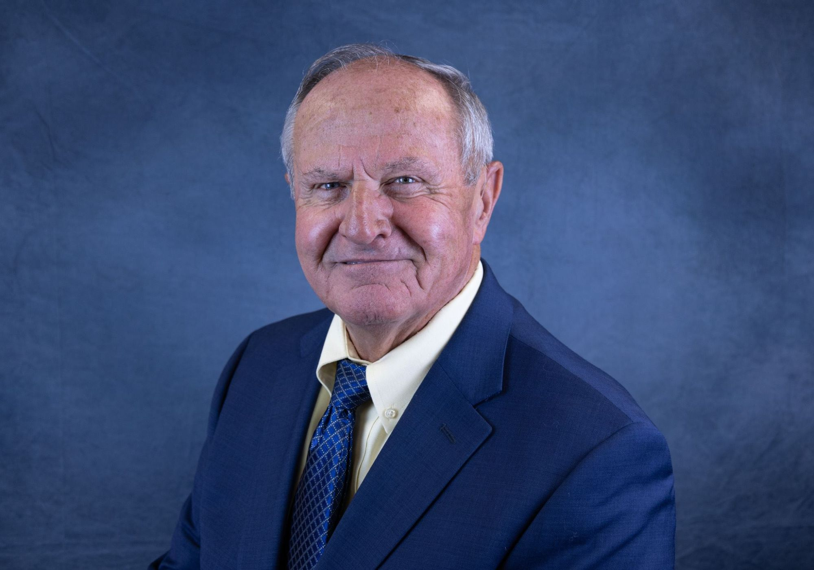

Power Supply & Generation Strategy
Portfolio evaluation, generation planning, and power-supply transitions that put ratepayers first — informed by guiding Garden City's power-supply overhaul and developing 27 MW of local generation.
Municipal Electric Utility Consulting
Michael J. Muirhead has spent his career inside municipal electric utilities — as a lineman, an electric department director, a city administrator, and, for sixteen years, the utility director for Garden City, Kansas. Now he helps public power communities, city managers, and utility boards plan, build, and lead with the same care he brought to his own.

About Mike
Some consultants have studied municipal utilities. Mike Muirhead has climbed their poles, run their crews, built their power plants, balanced their budgets, and defended them in Topeka and Washington, D.C.
Mike's career began on the line, as a lineman for Sturgeon Electric in Colorado. He took his trade to the municipal electric department of Gillette, Wyoming, where he rose through the ranks — serving the city in many capacities over the years, including Electric Department Director and, ultimately, City Administrator.
In January 2010 he joined the City of Garden City, Kansas, as Public Utilities Director — a role that grew into Director of Public Works & Utilities, spanning electric, water, wastewater, streets, and beyond. Over sixteen years he guided a transformation of the city's electric utility: a power-supply overhaul that ended three decades of full-requirements dependence and saved millions of dollars a year, the Jameson Energy Center and its three 9 MW Siemens gas turbines, and the reliability programs that carried the utility to APPA's Platinum-level Reliable Public Power Provider designation.
Along the way he became one of Kansas public power's most trusted voices — serving on the Kansas Municipal Energy Agency's Executive Committee from 2011 until his retirement, including terms in every officer seat; serving as President of Kansas Municipal Utilities; and advocating for municipal utilities before state and federal legislators.
Consulting Services
Every engagement is shaped to the community — a focused assessment, a season of hands-on leadership, or steady counsel through a multi-year program.
Portfolio evaluation, generation planning, and power-supply transitions that put ratepayers first — informed by guiding Garden City's power-supply overhaul and developing 27 MW of local generation.
Master plans that give governing bodies a roadmap and newer staff continuity — system studies, capital priorities, voltage conversion, undergrounding, and modernization of AMI, SCADA, and billing systems.
Practical programs that move outage numbers — pole testing and replacement, substation access and faster response, crew training and development — the disciplines behind a Reliable Public Power Provider designation.
Electric capacity planning for what's coming — industrial dual feeds, residential expansion, and the infrastructure commitments that let a community say yes to growth without sacrificing reliability.
Interim leadership, director mentoring, and succession planning that keep a utility steady through transitions — with the master-plan discipline that gives newer staff real continuity.
A seasoned, respected voice for public power before legislators, regulators, and joint action agencies — built on fifteen years of KMEA executive leadership, a KMU presidency, and advocacy before state and federal lawmakers.
Track Record
From 2010 to 2026, Mike led public works and utilities for Garden City, Kansas — a growing southwest Kansas community whose municipal electric utility, founded in 1914, serves roughly 11,500 meters through 14 substations.
Ended more than 30 years of full-requirements dependence on the local cooperative: in 2014 the city moved its entire power supply to KMEA's pooled energy projects — saving millions of dollars a year.
Partnered with KMEA to develop a new energy center anchored by three 9 MW Siemens SGT-400 gas turbines — roughly 27 MW of local peaking and backup generation stabilizing the city's energy costs.
Completed the revamp in 2021 by purchasing four substations and key distribution assets from the cooperative — gaining direct access to 115-kV transmission and eliminating a $500,000-a-year access charge.
Led the utility to APPA's Platinum-level Reliable Public Power Provider designation — backed by 250+ poles replaced, upgraded AMI, SCADA, and outage-management systems, and direct substation access that cut response times.
Delivered a 12 MW dual-feed interconnection for a major industrial customer and built out facilities to pace the city's goal of 3,000 new residential units by 2030.
Completed an electric utility master plan to guide the system for years to come, and modernized utility billing — the continuity a public utility depends on.
Perhaps one of the best ways we engage the community is by providing reliable, safe, low-cost electric power for the Garden City community on a 24-hour/365-day need, just as we have done since 1914 when the municipal electric utility was created.
Career
Few consultants can say they've held every job they now advise on. Mike's career runs the full arc of public power: the trade, the operation, the administration, and the advocacy.
Mike's career began the way many great public power careers do: on the line, learning the craft of electrical work as a lineman in Colorado.
Joining Gillette's municipal electric department as a young lineman, Mike rose to lead it — and ultimately to run the city as its Administrator, where utility leadership met city-wide governance.
Across that tenure, Mike was responsible for the generation, transmission, and distribution of the city's electric power — and eventually the full sweep of public works, from water and wastewater to streets — managing a roughly $40 million electric utility budget and delivering the projects that define the system today.
Fifteen years of elected leadership at Kansas's joint action agency for municipal energy. During his presidency, KMEA acquired Mid-States Energy Works and stood up its first electric line crew.
Now retired from Garden City, Mike brings the full weight of that career to municipal utilities, joint action agencies, and communities that want seasoned, practical guidance.
In Their Words
“The talent and experience he brought with him to Garden City made it seem like we had added a second City Manager to the roster! Garden City couldn't have taken on the volume of public infrastructure projects and private development projects it did in the last 16 years without his leadership and expertise. He embodies the ‘servant leader’ quality, always focusing on how to better serve our community, and his legacy will be felt in our infrastructure for decades to come.”
“Mike's leadership contributions to KMEA have been invaluable. He has been a constant, respected voice for municipal utilities in legislative circles, both in Topeka and Washington, D.C., and his dedication to advancing the interests of municipal utilities, in Kansas and across the country, has been unwavering.”
Recognition
American Public Power Association · 2023
Presented at APPA's National Conference in Seattle, recognizing managers who steer their organizations to new levels of excellence, lead by example, and inspire staff to do better.
Kansas Municipal Utilities · 2021
KMU's highest honor, recognizing outstanding contributions to the municipal utility industry in Kansas.
Kansas Municipal Energy Agency · 2020/2021
Named for KMEA's first general manager, honoring sustained contributions to municipal joint action, community, the electric utility industry, and public power.
KMEA & KMU
Fifteen years on KMEA's Executive Committee — with terms as President, Vice President, and Secretary/Treasurer — and past President of Kansas Municipal Utilities, guiding joint action for municipal energy across the state.
Work with Mike
Whether you're weighing a power-supply decision, planning your system's next decade, or navigating a leadership transition — the first conversation is easy. Tell Mike where your utility stands, and he'll tell you honestly whether and how he can help. Every engagement is handled personally: you work directly with Mike, start to finish.